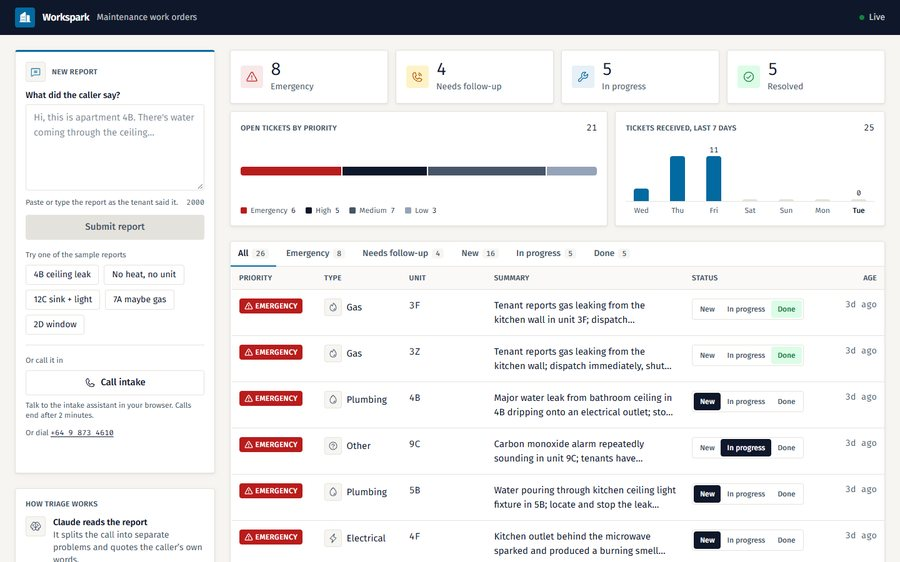
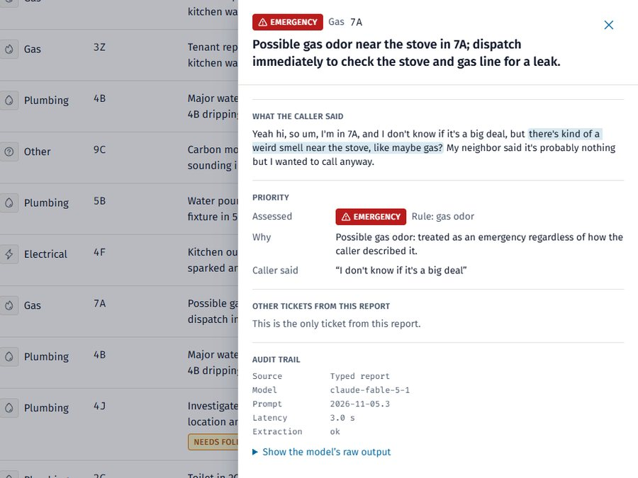
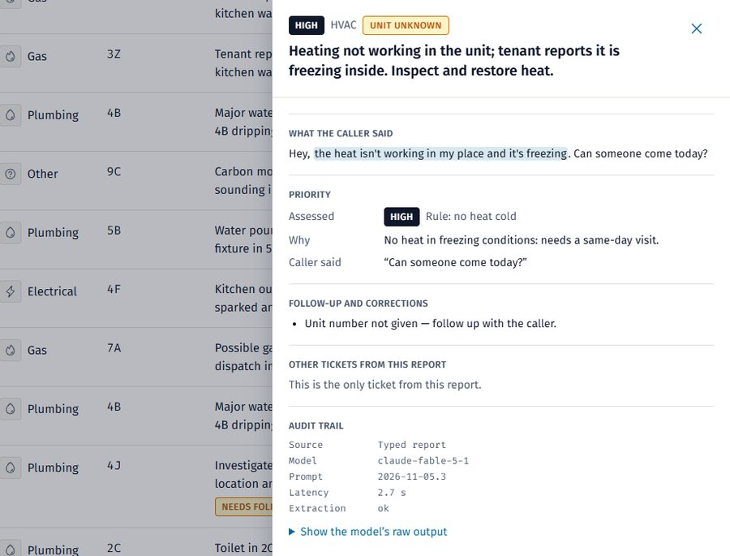
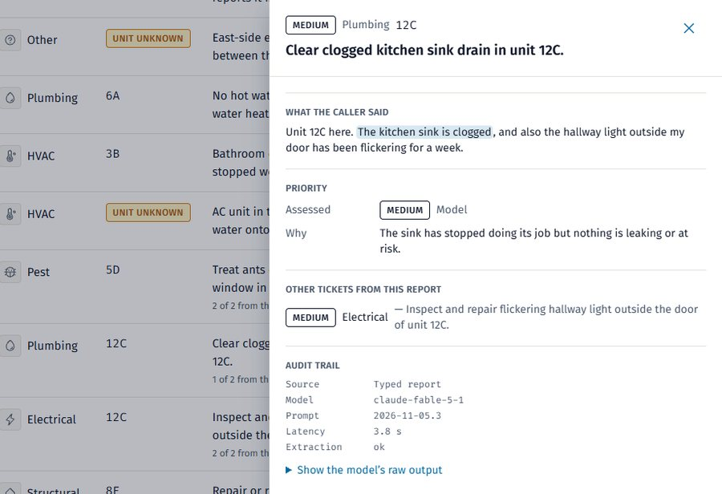
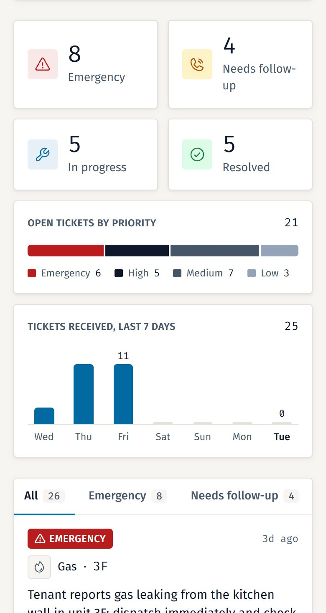

Case study: AI maintenance triage for a property team
Workspark
Tenants report maintenance problems the way people talk: two problems in one message, no unit number, a gas smell described as probably nothing. I built Workspark to read each report, split it into work orders, check the AI's answer against what the tenant actually said, and put the result on a live board with emergencies first. Tenants can type, call from the browser or ring a phone line.
- sample reports triaged correctly
- 5/5
- seconds from report to ticket
- 2.6–4.3
- automated tests
- 161
- A tenant reports a problemTyped, from the browser, or on the phone
- Claude reads it, code checks itOne ticket per problem, units never guessed
- A ticket lands on the live boardEmergencies first, with the reason shown
The screens
This is the live dashboard on Vercel. Every ticket went through the real pipeline and model, but the tenants, units and messages are made up for the demo.





The brief
A property maintenance team needed tenant reports turned into work orders it could act on. The brief came with five sample reports, and each hid a trap: missing details, two problems in one message, and danger the tenant played down. It had to work end to end, from report to database to dashboard to status change, and a voice option was a bonus.
-
Emergencies jump the queue
Gas, smoke, water near electrics, flooding and no heat in the cold are always escalated, however calmly the tenant describes them.
-
One work order per problem
A message about a clogged sink and a flickering light becomes two tickets, each with its own type, priority and location.
-
Gaps flagged, never filled in
If the tenant didn't give a unit, the ticket says so and asks for a follow-up. A missing detail never lowers the priority.
-
A reason on every priority
Each ticket shows the tenant's exact words, the line that mattered, and whether the AI or a safety rule set the priority.
-
Report it however you like
Typed reports, calls from the browser and calls to the phone line all land in the same queue and go through the same checks.
-
One live board for the team
New tickets and status changes appear on every open screen without a refresh, on a desktop or a phone.
How a report becomes a work order
Every report takes the same six steps, typed or spoken. The AI does the reading. The parts where a mistake could hurt someone are plain code with tests.
-
A report comes in
Typed reports go straight to the API. Calls, from the browser or the phone line, reach a voice assistant that asks once for a missing detail and ends within two minutes. When a call ends, its transcript is sent to a webhook that checks a shared secret before doing anything.
Next.js API routes, Vapi, Claude Haiku 5.5
-
Claude reads the report
One model call per report returns a list of issues. Each issue has a type, a priority with a reason, the unit, the area and the tenant's own words as evidence. The answer is validated against a schema before anything is saved. It is retried once, and if it still fails the report is saved as a manual-review ticket, so nothing is lost.
Claude API (Fable 5.1), structured outputs, Zod
-
Code checks the facts
A unit survives only if the tenant actually said it, and every quote has to appear word for word in the report. Anything that fails is dropped and the ticket is flagged for follow-up.
TypeScript, Vitest
-
Safety rules set the floor
Tested rules look for gas, fire or smoke, water near electrics, flooding and no heat in the cold. They can raise a priority and record which rule fired and why. They can never lower one, and the model's own priority is kept beside the final one.
TypeScript, Vitest
-
Saved together, shown live
A report and all of its tickets are saved in one database transaction, so a half-saved report can't happen. Realtime pushes the new rows to every open board. The key the browser holds can only read.
Supabase Postgres, Realtime, row level security
-
The team works the queue
Moving a ticket from New to In progress to Done updates at once. If the save fails, the change is undone with a message beside the ticket.
React, Tailwind CSS, Vercel
What went wrong and what fixed it
These are real problems from this build. Each change was reviewed before it merged, which is where most of these were caught.
-
A smoke alarm that hid real smoke
A chirping smoke alarm usually means a low battery, so I told the fire rule to skip that phrase. The skip was too greedy and also hid real smoke mentioned in the same sentence. A review caught it, and the rule now skips only the alarm phrase itself.
-
Water through a light fixture
"Water is pouring through the kitchen light" reached Emergency through the flooding rule, not the water-near-electrics rule, because that rule didn't know words like light, fixture or switch. I added them, with tests for natural phrasings, because the reason shown to the team matters as much as the priority.
-
A definition written too close to the test
My first definition of a Low priority was shaped around sample report 5. A reviewer flagged it. I rewrote it in general terms and reran the evaluation against the real model, and it still passed 5 of 5.
-
Calls that could vanish
The voice platform sends empty fields as null, and my first webhook treated one null as a broken message and dropped the whole call. The platform doesn't retry, so it would have been lost without a trace. A review caught it before the first real call. Nulls are accepted now, and any failure logs the call so it can be replayed.
-
A Cancel button that didn't cancel
The voice SDK's start call never fails. It reports errors separately and returns nothing. Cancelling while a call was connecting could leave it running. The cancel and error rules now live in a small tested state machine, and a call that joins after a cancel is stopped.
-
A browser key with no limits
The public key behind the Call button worked from any website and with any assistant in the voice account. Before the button went live, I restricted it to this one assistant and the two addresses that use it.
Results and limits
Workspark is live with typed and voice intake. It was built in the 72 hours the brief allowed, so I have no measured business results yet: no response times or hours saved from a real team. Here is what I can show.
What it delivered
- 5 of 5 sample reports from the brief triaged exactly as required, checked by an evaluation that runs the real model.
- 2.6 to 4.3 seconds from a typed report to saved work orders.
- Three ways to report, typed, a browser call and a phone line, all through the same checks.
- Every ticket shows the tenant's words, what decided its priority, and an audit trail with the model and prompt version.
- 161 automated tests, a type, lint and format check on every pull request, and six pull requests merged after review.
What it can't do yet
- The safety rules match words, not meaning. "No gas smell" still raises a gas emergency, and water mentioned beside a light fixture can over-escalate.
- There's no sign-in. Anyone with the link can add reports and change statuses. A per-address rate limit and size caps keep abuse small.
- A carbon monoxide alarm is filed as Other instead of Gas, although the gas rule still makes it an emergency.
- A spoken unit with no digits, such as "seven A", is dropped and flagged for follow-up.
- The demo phone line is a New Zealand number, so callers elsewhere pay international rates. The browser call works anywhere.
The model reads. The rules decide when a mistake could hurt someone, and they can only make a ticket more urgent.
Getting more requests than your team can read?
I build AI intake and triage that sorts messages and calls before a person opens them, and I'll tell you what it can't do yet. Book a free 30-minute call, or send me an email.
- raffymcfee@gmail.com
- Location
- Pampanga, Philippines